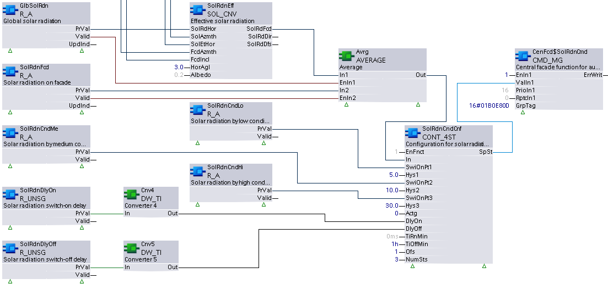

R_UNSG: Read unsigned
R_ UNSG reads Present value and additional specified properties of a single data point with a present value of datatype Unsigned.
This XFB differs from XFB Read multistate (R_M), which also reads a present value of datatype Unsigned. The compatible BACnet objects are different, and R_ UNSG is able to read the full integer range of 0 to 232 -1 (0 to 4,294,967,295), instead of 0 to 231 -1.
Compatible data points:
- Unsigned configuration value [UCnfVal]
- Third party objects which contain the required properties, including:
- BACnet Accumulator object
- BACnet Schedule object
- BACnet Positive integer value object
Refer to data point objects for a detailed description of the BACnet data points.
Required properties:
- Present value
- State flag
Optional properties:
- Reliability
- Update count
Pin description (inputs)
BaObjRef | |
|---|---|
BA-Object reference Structure [BaObjRef] defines a bound connection between XFB and BACnet object. The binding occurs automatically. Manual configuration attempts are not necessary and can result in system errors. | |
DeviceId | Device identifier Double word (default value: 16#3FFFFF) [DeviceId] comprises object type and object instance in a single identifier. It is used to identify device object: local or remote. Local device object could also be identified by value 16#3FFFFF. |
ObjectId | Object identifier Double word (default value: 16#3FFFFF) [ObjectId] comprises object type and object instance in a single identifier. It is used to identify object within a device. |
ItemId | Item identifier Integer (default value: -1) [ItemId] represents an item index in the functional view node object, which references the BACnet object. [ObjectId] and [ItemId] together define an indirect access reference to the BACnet object. Value -1 indicates that direct binding is used. |
Pin description (outputs)
PrVal |
|---|
Present value Double word (default value: 0) The value of the Present value property from the referenced BACnet object. [PrVal] will deliver the last valid value if [Valid] = False. Note |
Valid | |
|---|---|
Valid Boolean (default value: False) An indication of whether output pin [PrVal] is reliable. | |
1 (True) | [PrVal] is reliable.
AND
|
0 (False) | [PrVal] is not reliable.
OR
|
UpdInd |
|---|
Update indication Boolean (default value: False) An indication of whether the Present value property has been newly updated. When an update occurs, [UpdInd] toggles from 0 to 1 (True) and returns to 0 (False) on the next cycle (immediate). It is not possible to detect the toggle without an additional function block connected to [UpdInd] (for example, a counter function block). [UpdInd] will only be set to True if [Valid] is True. [UpdInd] uses the update count property if present. This makes it possible to recognize a value as having been updated in cases where the new value is the same as the previous value. For objects without update count, [UpdInd] toggles on a change to Present value. |
ErrCode | |
|---|---|
Error code indication Integer (default value: 20) The status of the last performance of the XFB read operation. | |
= 0 | No error. |
> 0 | Error, see XFB error codes. |
Use case examples
NOTICE

Note
Graphics reflect examples of XFB implementations; See ABT for current examples of CFC.
R_UNSG: Example taken from the Central shading function CHT{CenGlrThPrt01}. Due to graphical size limitations, function blocks may be missing or shown more closely grouped than is typical.
